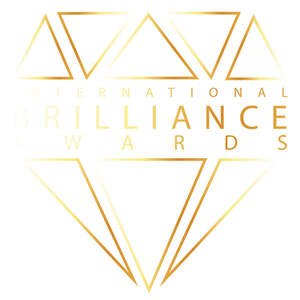

Trade Mark Journal No.2025/043 24 October 2025
UK00004261532 9 September 2025 (35,41)

- Class 35
- Arranging and conducting of fairs and exhibitions for business purposes; Arranging and conducting of fairs and exhibitions for advertising purposes; Arranging and conducting of advertising events; Arranging and conducting of promotional events; Arranging and conducting marketing promotional events for others; Arranging and conducting of marketing events; Planning and conducting of trade fairs, exhibitions and presentations for commercial or advertising purposes; Planning and conducting of trade fairs, exhibitions and presentations for economic or advertising purposes; Arranging and conducting of fairs and exhibitions for business and advertising purposes; Arranging and conducting of commercial events; Conducting employee incentive award programs; Arranging and conducting of business meetings; Arranging and conducting trade show exhibitions; Arranging and conducting of exhibitions for business purposes.
- Class 41
- Organising of education conferences; Organising of education seminars; Arranging and conducting conferences and seminars; Arranging of conferences relating to training; Arranging and conducting of training seminars; Arranging and conducting educational conferences; Organising of educational conferences; Conducting of educational conferences; Organising of conferences relating to education; Conducting training seminars; Organising of educational seminars; Arranging and conducting of conferences, congresses and symposiums; Arranging of seminars relating to training; Arranging and conducting of workshops [training]; Arranging and conducting of training workshops; Workshops (Arranging and conducting of -) [training]; Organisation of conferences relating to training; Arranging, conducting and organisation of conferences; Competitions (Organising of education -); Arranging and conducting award ceremonies; Arranging and conducting of conferences and congresses; Arranging, conducting and organisation of seminars; Conducting workshops [training]; Arranging of festivals for training purposes; Arranging and conducting of seminars and workshops; Arranging and conducting of workshops and seminars; Arranging and conducting of lectures for training purposes; Organising of conferences for educational purposes; Arranging and conducting of competitions [education or entertainment]; Organising of meetings in the field of education; Arranging, conducting and organisation of symposiums; Organisation of training seminars; Organisation of seminars and conferences; Arranging and conducting of conferences; Conferences (Arranging and conducting of -); Arranging and conducting conferences; Arranging of competitions for training purposes; Arranging and conducting of training courses; Arranging of educational conferences; Arranging and conducting of meetings in the field of education; Arranging and conducting of soccer training programs; Arranging of conferences relating to education; Conducting of seminars and congresses; Arranging of presentations for training purposes; Arranging and conducting of American football training programs; Organising of education conventions; Arranging of seminars relating to education; Arranging and conducting of workshops and seminars in self-awareness; Arranging, conducting and organization of seminars; Conducting courses, seminars and workshops; Consultancy relating to arranging and conducting of conferences; Organisation of symposia relating to training; Arranging and conducting education fairs; Conducting training seminars for clients; Arranging and conducting of educational events; Conducting seminars; Arranging, conducting and organisation of workshops; Arranging of workshops and seminars; Conducting of instructional seminars relating to time organisation; Arranging and conducting of seminars; Seminars (Arranging and conducting of -); Arranging and conducting seminars; Organisation of seminars relating to education; Organisation of conferences relating to education; Organising of education exhibitions; Arranging of conventions for training purposes; Consultancy and information services relating to arranging, conducting and organisation of conferences; Organization, arranging and conducting of sports competitions; Hosting [organising] awards relating to videos; Conducting of educational events; Arranging and conducting of education courses relating to the travel industry; Arranging and conducting of educational courses; Organising of educational lectures; Hosting [organising] awards relating to television; Conducting of business conferences; Organisation of conferences, exhibitions and competitions; Arranging and conducting of youth soccer training programs; Consultancy relating to arranging and conducting of symposiums; Hosting [organising] awards relating to films; Conducting of courses relating to administrative training; Arranging of seminars; Conducting workshops and seminars in personal awareness; Arranging and conducting fairs for academic purposes; Arranging and conducting of youth American football training programs; Arranging and conducting of symposiums; Consultancy and information services relating to arranging, conducting and organisation of symposiums; Hosting [organising] awards; Arranging of demonstrations for training purposes; Organising of meetings in the field of entertainment; Conducting of tours for training purposes; Arranging and conducting of meetings in the field of entertainment; Arranging of conferences; Arranging conferences; Arranging of training courses; Organising of business training; Arranging of conferences relating to cultural activities; Arranging and conducting of sports competitions; Arranging and conducting athletic competitions; Arranging and conducting of lectures for educational purposes; Organising of educational congresses; Arranging and conducting competitions; Arranging of award ceremonies; Arranging, conducting and organisation of congresses; Arranging of seminars relating to cultural activities; Organising of commercial training; Conducting of instructional seminars; Consultancy and information services relating to arranging, conducting and organisation of colloquiums; Organisation of educational seminars; Arranging and conducting of seminars in the field of oncology; Conducting workshops and seminars in art appreciation; Providing online training seminars; Consultancy and information services relating to arranging, conducting and organisation of workshops; Arranging and conducting of workshops; Arranging and conducting workshops; Consultancy relating to arranging and conducting of congresses; Organising of educational exhibitions; Workshops for training purposes; Organisation of competitions and awards; Issuing of educational awards; Providing facilities for sporting events, sports and athletic competitions and awards programmes.
Blue Ocean Consultancy Ltd